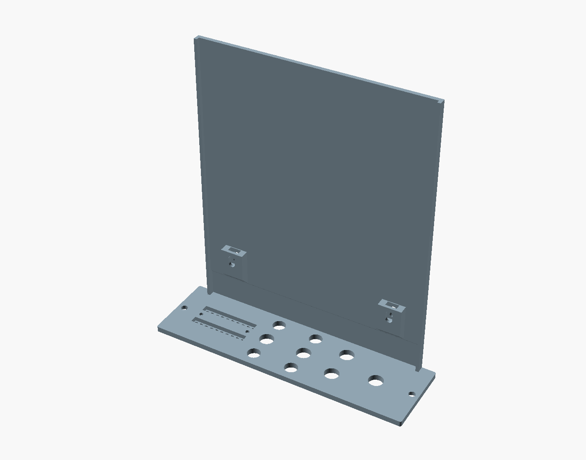
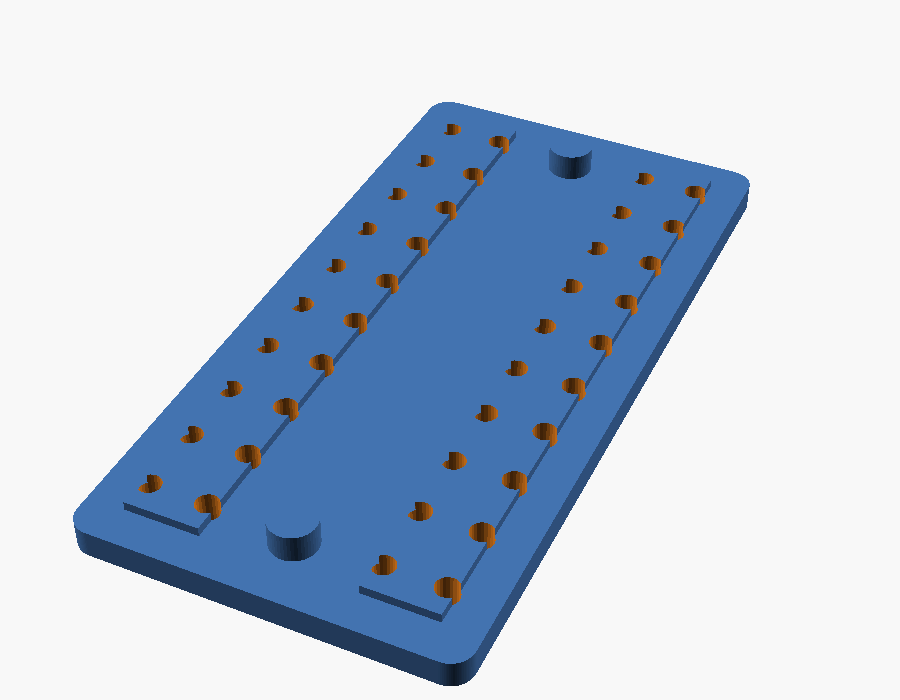

Practical
Printing the faceplate
The built compressor wears a 3D-printed faceplate, made on an ordinary FDM
printer with no laser cutter, CNC or panel shop. It has the same holes and legend as the
toggle layout, so it fits the front board as drawn, and it carries the main
board’s bracket and the meter LEDs too.

The files
Everything is in panel/print/ in the compressor repository,
whose README has every parameter.
| File | What it is |
|---|---|
faceplate-multicolor.3mf | Panel and legend as one object with two parts, for a two-colour print in Bambu Studio or OrcaSlicer |
faceplate-multicolor-prusaslicer.3mf | The same for PrusaSlicer, which keeps its part table in a different place |
faceplate.stl | The faceplate on its own, face down for printing, with the main-board bracket standing up off its back |
faceplate-legend.stl | The engraved legend and pot ticks as their own body, for a second colour |
faceplate-led-retainer.stl | A thin plate that holds the twenty meter LEDs in from the back |
faceplate-fit-test.stl and its 3MFs | A 27 mm strip across THRESHOLD, HPF, KEY and the bottom of both meters, to print first |
faceplate.step, faceplate-blank.step, faceplate-led-retainer.step | Solid models for Fusion and other CAD: with the legend as a second body, with no legend, and the retainer in place |
faceplate-legend.dxf | The legend as outlines, one layer per label, for drawing your own on the blank |
faceplate.scad | The OpenSCAD model. Every print setting is a parameter at the top |
panel_data.scad | Hole positions and legend text, written by panel/make_panel.py from the same source as the DXF. Don’t edit it by hand |
build.sh | Rebuilds the STLs, 3MFs and (with CadQuery) the STEPs from the model |
How it differs from the metal panel
- 3.2 mm thick, the same as a 1/8″ metal panel, so the rack screws and everything behind the panel sit where the front board expects.
- Flat round the pots. The Altronics 9 mm pots have no threaded bushing or nut. They are held by the front board, and the board by the four toggle nuts, so the pot holes are only clearance for the shafts and the knobs sit close to the panel.
- Meter LEDs held in the panel. The holes suit Jaycar’s 2 mm tower LEDs (ZD0060 orange, ZD0070 green, ZD0040 red), as measured: a 2.0 mm tower, 1.5 mm tall, on a 3.25 × 2.5 mm base. Each tower pushes into a 2.2 mm hole from the back and its base sits in a 3.55 mm slot, 2.3 mm deep, down the back of each meter column. The retainer holds them there.
- Holes print oversize on purpose. Pot, toggle and screw holes come out
0.2 mm larger than drawn (
hole_comp), because FDM holes shrink. - 37.8 × 132.6 mm rather than the nominal 38.10 × 133.35, so it slides in beside the next module. The front edge has a 0.4 mm chamfer so first-layer squish doesn’t flare it.
- The legend is engraved 0.6 mm deep, drawn 30% larger than on the mockup and with every stroke thickened so none is thinner than about 0.5 mm, more than one line of a 0.4 mm nozzle. Each pot gets three ticks: start, middle and end of travel.
The main-board bracket

The bracket is printed in one piece with the faceplate. A wall stands off the back along
the panel’s left edge (seen from the front) and runs the whole length of the main board,
stopping 2 mm short of the edge connector, so it also covers the board’s solder side.
It is 0.8 mm thick beside the front board and 2.0 mm behind it, with a 1.6 mm
flange along its top and bottom edges to stiffen it. Two ears reach in to the main
board’s M3 holes H1 and H2, each with a slot for an M3 nut.
To fit the main board, drop an M3 nut into each ear and put an M3 × 6
screw through H1 and H2 from the component side, with no washer. An
M3 × 10 pokes out through the side of the wall. The screw holes are slotted ±1.5 mm,
so the board can sit a little nearer the panel or further back. Trim the leads on the back of
the front board flush where the ears pass behind it.
The board’s position is drawn from the 500-series spec and the board files: 11.12 mm
left of the panel’s centreline, its front edge 24 mm behind the panel, and centred
vertically. All three are parameters at the top of faceplate.scad. Set
bracket = false for a plain panel to use with a metal angle instead.
The LED retainer

faceplate-led-retainer.stl is a 16.5 × 32.8 mm plate, 1.2 mm thick,
over the back of both meters. A rib goes into each LED slot and presses on the backs of the LED
bases, leaving each tip about 0.2 mm proud of the front. Two 2 mm pins press into
holes in the back of the panel, and each LED’s leads pass through their own pair of
1.3 mm holes on the front board’s 2.54 mm pitch. Print it flat, ribs and pins up.
- Push all twenty LEDs into the panel from the back, flat (cathode) side as the front board’s silkscreen shows. The two columns face opposite ways.
- Thread the leads through the retainer and press it on until its pins are home. A drop of glue on each pin makes it permanent.
- Fit the front board over the leads, tighten the toggle nuts, and solder the LEDs last.
Printing it
- Print the fit test first. Check that a pot and a toggle drop through their
holes and an LED tower pushes into its hole from the back with the base in the slot. If a
hole is tight or loose, change
hole_compinfaceplate.scadand rebuild (or use OpenSCAD’s Customizer). - Material: the repository suggests PETG in black or dark grey: a light colour lets each meter LED glow through the thin walls beside its hole, and PLA softens sooner in a warm rack. The built module’s faceplate is light lilac matte PLA with a black PLA legend, printed at 0.08 mm layers.
- Settings: 0.4 mm nozzle, 0.2 mm layers or finer, 4 walls, 100% infill, no supports. Print it as exported, face down: the LED slots end up on top and the bracket stands straight up with 45° undersides on its ears, so nothing needs supports. The wall makes the print 146 mm tall; if its top wobbles, slow the outer walls for the upper layers.
- Two colours: in Bambu Studio or OrcaSlicer, import
faceplate-multicolor.3mfwith File, Import (Cmd/Ctrl+I); in PrusaSlicer use the-prusaslicerversion. It loads as one object with two parts already lined up, the panel on filament 1 and the legend on filament 2. The colours only swap over the first 0.6 mm, but it still needs a multicolour unit (AMS, MMU) or a second nozzle. - If the letters lift: use a brim and glue stick, slow the first layer, set Z-hop to 0.4 mm and avoid crossing walls. Don’t use a raft, which spoils the face.
- One colour: print
faceplate.stland fill the engraving afterwards with paint, or a white wax crayon rubbed in and wiped off.
Fitting it
- Snap the small anti-rotation tab off the front of each pot, or it holds the pot off the back of the panel.
- Tighten the toggle nuts gently. Plastic creeps, and the nuts only need to hold the board.
- Grounding. A plastic panel and bracket don’t tie the toggle bushings
to
CHASSISthe way a metal panel onH2does. If touching a toggle adds hum, run a wire from a solder tag under one toggle’s nut toH2.